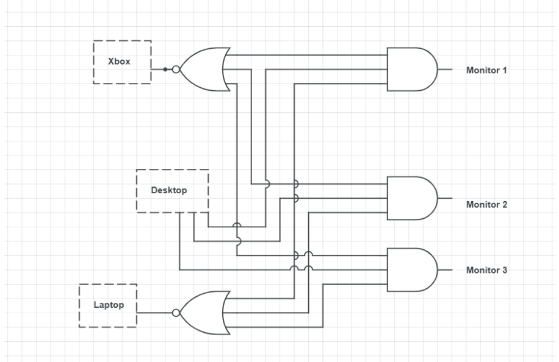

In this step, we finalized the core system architecture that will enable flexible AV control without the complexity and cost of a full matrix switcher. This project will NOT use a 4×4 matrix OR a KVM. Instead, the system uses 3 independent HDMI switches (one per monitor), 1 HDMI splitter for the Xbox, 1 triple-HDMI laptop dock, and Desktop connected using HDMI + DisplayPort→HDMI adapters.
Create an L-shaped electric sit/stand desk for the bedroom with clean cable management and flexible AV control for three monitors, an Xbox, a desktop, and a laptop.
Traditional setups require unplugging cables to switch devices between monitors. For gaming, work, and laptop use, this becomes tedious with multiple monitors.
Use 3 independent HDMI switches (one per monitor) combined with a splitter for the Xbox. This allows each monitor to independently select its input source. This achieves the same functionality as a matrix at a much lower cost and with simpler setup.
While a 4×4 HDMI matrix would work, it costs significantly more and adds unnecessary complexity for our needs. The switch-based approach achieves the same functionality at a fraction of the cost.
Each monitor gets its own input selector. Each monitor can independently choose between Desktop, Laptop, or Xbox. Looks like this:
 Source: circuitlab.comThis design allows for maximum flexibility. Each monitor can independently switch between any of the three devices without affecting the others. (Ignore the real-world symbols in the diagram, they were just placeholders because I didn't want to draw. The actual implementation will use simple HDMI switches and a splitter, no custom electronics for now...)
3 total monitors.
Each monitor has one 3-input HDMI switch.
Inputs to each switch:
Output: Goes directly to that monitor.
This system allows:
Baseline spec: HDMI 2.0 class switching, 4K @ 60Hz stable, HDR supported (depending on switch quality).
Note: This design prioritizes flexibility and cost over 4K120 routing. If high-refresh gaming is needed later, the desktop can still be connected directly via DisplayPort to one monitor as a future upgrade.
Originally considered converting everything to DisplayPort. Updated decision: Keep switching backbone in HDMI for compatibility and cost.
Reason: Xbox is HDMI only, Laptop docks output HDMI, HDMI switches and splitters are far more available and affordable. Desktop still benefits from native DisplayPort outputs and can be adapted to HDMI for switching.
No matrix. No custom AV routing hardware. No complex electronics in phase 1.
System will use: Splitter + 3 switches, Clean wiring, Modular upgrade path later.